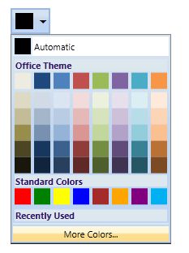
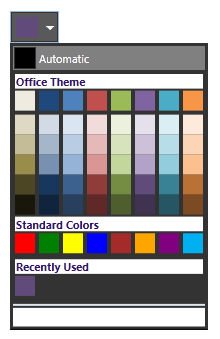
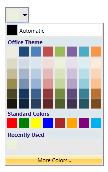
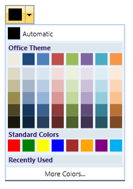
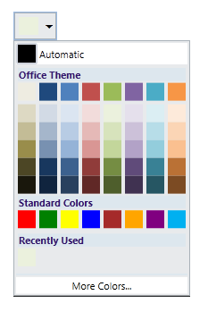
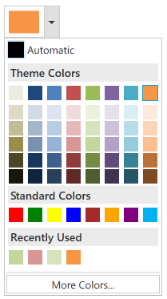

The appearance of the ColorPickerPalette control can be customized by using the VisualStyle property. The following are the various built-in visual styles for ColorPickerPalette control.
· Blend
· Office2003
· Office2007Blue
· Office2007Black
· Office2007Silver
· VS2010
· Metro

Figure 201: Default Style

Figure 202: Blend Style

Figure 203: Office2007Black Style

Figure 204: Office2007Blue Style

Figure 205: Office2007Silver Style

Figure 206: Metro style